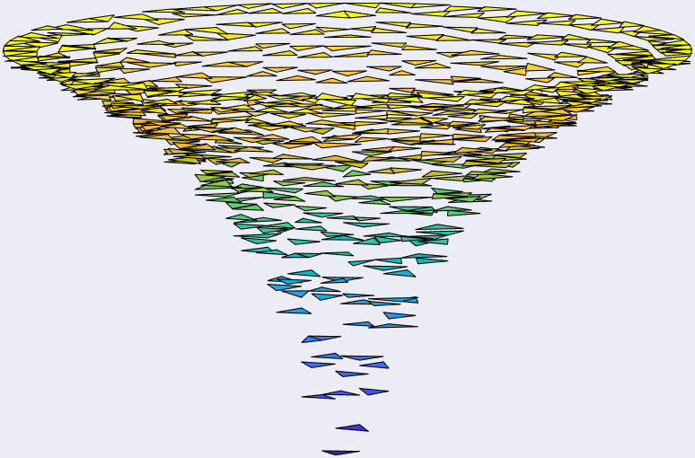
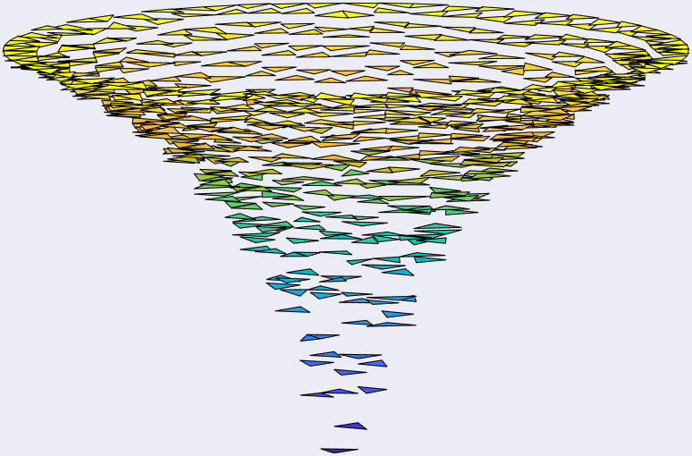

Posillipo - Gulf of Naples, Italy, 2021.
Welcome to my homepage!
Monday to Friday, before 6pm, I am a Ph.D. in Mathematics operating as
research scientist in the field of Numerical Analysis
and High Performance Scientific Computing.
The rest of the time I enjoy riding my bike, eating, and cooking. I am
very passionate about mountains and outdoor activities such as camping
and barbecueing in the wild.
If you want to know more about my
current position,
research interests,
and
passion projects
you're in the right place!
You want to read more details about my career? Check out my
Curriculum Vitae
or
Google Scholar page.
If instead you are one of my students and wish to ask me some questions,
you are welcome to drop me an email here:
Mathematician, pizza expert.
(site under construction - last update: January 2023)
Current position
I currently work in Nice, France, as research scientist for Neurodec.
My colleagues and I are developing our Myoelectric Digital Twin,
i.e., a virtual clone of your arm where the quasi-static Maxwell
equations ruling the physics inside of it are precisely reproduced.
Why that? You may ask. Well, the force exerted by a muscle
depends on the number of motor units (neurons commanding bunches of
muscle fibers) activation and the rates at which they discharge action
potentials.
The action potentials are "wrinkles" in the base-line electric potential that propagates from neuromuscular junctions along muscle fibers until they hit the tendons.
This process produces an electromagnetic 'footprint' (EMG signals) that can be recorded by skin electrodes and use to train a computer to associate movements and gestures to such 'footprints'.
Sometimes my job requires me being a guinea pig :C
However, the acquisition of real EMG data is time-consuming and expensive. It requires expert knowledge and is error-prone even in the best circumstances. Moreover, the produced dataset has limited variability, is highly specific and it is only partially labeled, at best.
Applications include Robotic Control, Metaverse, Medicine and Sport (images credits to Neurodec)
Here at Neurodec, we develope the MDT software, capable of simulating arbitrary large datasets of ultra-realistic synthetic EMG signals. The simulation is very fast, the data is extremely precise and perfectly labeled, making it ideal for training industrial AI-based algorithms.
Research interests
My research interests include a host of topics from the High Performance Scientific Computing domain. In this section I give a quick overview of some of them.
Table of contents:
- click to go to: Low-Tech High-Efficiency CPU/GPU Finite Elements implementations
- click to go to: Design of integrator-solutor pairs in Exponential Integration of stiff PDEs
- click to go to: Numerical methods for Multiscale and Optimal Control problems
- click to go to: Numerical Linear Algebra and Arbitrary Precision arithmetic
Low-Tech High-Efficiency CPU/GPU Finite Elements implementations
One day, tired of the unnerving intricacy of the state-of-the-arts FE implementations, I created my own rudimental FE environment. What I expected to be no more than a handy inquiry tool, turned out being quite a slick and highly-efficient gadget.
 

Piecewise constant component of Mixed-Elements solution (lowest order Raviart-Thomas Elements coupled with piecewise constant FE) to Poisson equation.
Now, I aim to assemble, in less than a thousand MATLAB/Python lines, the richest FE software possible, and to make it faster than the best-established compiled FE machineries. Will I be successful? Can't say yet. As now, I only got one of the fastest generator ever of colorful pictures.
Design of integrator-solutor pairs in Exponential Integration of stiff PDEs
When simulating dynamics, more accuracy means more effort. This is especially true when the underlying differential equations are stiff. Stiff systems are characterized by a wide range of time scales in their evolution. Let's write our stiff system of differential equations like this:
so that the stiffness is concentrated in the linearity A. Usually the matrix A comes from the space discretization of differential operators from Partial Differential equations, it is therefore also extremely stiff, large, and sparse. Exponential integrators are usually derived from the Duhamel formula
where the linearity A is treated exactly. For this reason, they are especially suited for the integration of stiff systems of differential equations (see [HO10]). Each exponential-type method differs from the others for how it approximates the integral appearing in the formula above, usually by means of few linear combinations of phi-functions:
But, are these linear combinations of phi-functions difficult to compute?
Well, not really, we can obtain the combination above through the single,
slightly larger, action of the matrix exponential:
where
When dealing with such matrices you have to be careful to what you do:
- it's okay to multiply A by vectors
- it's NOT okay to form functions of A
In fact, say that A is the Finite Differences discretization of the two-dimensional Laplacian operator over a square 128x128 grid, we have that
- storing A requires about 2Mb of space
- storing the exponential of A requires about 4.3Gb(!!!) of space
Hence, similarly to when solving linear systems you never actually compute the inverse of the lhs matrix, we do not form the exponential of à but just its action.
References:
[HO10] M. Hochbruck, A. Ostermann, Exponential integrators, Acta Numer. 19 (2010) 209–286.
The Kronecker's "pro-gamer" move
When an evolutionary PDE is numerically treated with the method of lines over domains that are Cartesian product of d intervals, A is a Kronecker sum, that is
where the rounded x indicates the Kronecker product.
Now, the cool thing about matrices in this form is that their exponential
can be written as
which is a rather stupid way to form it, as it implies to form a huge full matrix and then to multiply it into a vector. On the other hand, this is equivalent to
where U is a d-dimensional tensor such that vec(U),
i.e. stacking its columns one on the top of the other, equals v, and
the strangely subscripted cross products are called μ-mode products.
The μ-mode product takes the the d-dimensional tensor U
and the exponential of Aμ,
and it does the following serie of operations to them:
- rotates it to expose its μth face;
- reshapes it so that it becomes a two-dimensional matrix with nμ rows;
- multiplies the exponential of Aμ into it;
- reshapes the result back into the original form of U.
The above formula is nothing more than the d-dimensional generalization of the well-known two dimensional formula
This procedure is madly efficient: the d matrix exponentials are usually rather small and can easily be formed once and for all while the μ-mode products rely on the level 3 gemm BLAS (Generalized Matrix Matrix product from the Basic Linear Algebra Subprograms).
In particular, we shown in [CCEOZ22] that the performance on a GPU architeture can be so extreme that are close to the theoretical limit of the hardware.
Now, to compute linear combinations of phi-function of matrix in Kronecker product is trickier since à is not in Kronecker form even though A is. However, in [CCZ23k] we managed to tackle this issue using an alternative integral definition of these functions. Results are very promising and we are very active in this line of work.
References:
[CCEOZ22] M. Caliari, F. Cassini, L. Einkemmer, A. Ostermann, F. Zivcovich, A μ-mode integrator for solving evolution equations in Kronecker form, J. Comput. Phys. 455 (2022) 110989.
[CCZ22] M. Caliari, F. Cassini, F. Zivcovich, A μ-mode BLAS approach for multidimensional tensor structured problems, Numer. Algorithms (2022).
[CCZ23k] M. Caliari, F. Cassini, F. Zivcovich, A μ-mode approach for exponential integrators: actions of φ-functions of Kronecker sums, ArXiv (2023).
The BAMPHI routine
To form linear combinations of the phi-functions when the matrix to be exponentiate is not in Kronecker form one has to settle for something more involved and expensive. A prominent way is represented by the so called Krylov-type approximations:
where m << N, Vm and Hm are the matrices typical of the standard Krylov decomposition of Ã:
a prominent example of a Krylov-type routine is constituted by KIOPS from
[GRT18].
The problem with this approach is that, when A is very large, the
Arnoldi procedure employed to obtain the Krylov decomposition requires
tons of memory operations and huge storage space (the matrix
Vm gets really heavy for growing values of m).
To put things in perspective, Krylov-type methods in exponential
integration call the Arnoldi procedure
- at each substep (a number in the tens of even hundreds)...
- ...of each linear combination of phi-function (less than ten)...
- ...of each exponential integration step (maybe hundreds, thousands, or even millions)
amounting to an insane amount of calls to this tiring
procedure.
Moreover, we noticed that, from a call to another to the Arnoldi
decomposition, the setting does not change much: the matrix Ã
has a stucture as in figure
To give an idea, usually A has millions of rows/columns while J is, like, a 4 by 4 matrix at most.
In other words, exponential integration is a vastly repetitive task, and this makes us even more frustrated about all those Arnoldi calls.
To tackle this issue we designed
BAMPHI,
a routine for computing the action of the matrix exponential which is
designed to collect and reuse the information about A gathered
through the exponential integration steps.
To do so, we exploited the fact that the Krylov approximation above is
mathematically equivalent to the polynomial approximation interpolating
the exponential function at the Ritz’s values, i.e., the eigenvalues of
Hm.
Therefore, once the Ritz's values are computed once at the first go,
BAMPHI continues the calculations by approximating the exponential
function via a polynomial interpolation at the set of Ritz's values,
bringing the overall number of calls to Arnoldi to one.
On the other hand, BAMPHI almost always performs a larger number of matrix
vector products.
But the matrices of interests are not only very large but also
very sparse, hence, all in all, BAMPHI manages to reach unmatched
levels of speed on a variety of numerical experiments
(see [CCZ23b]).
As future work, we plan to make a comparison between Krylov-type methods
and BAMPHI on a GPU architecture.
References:
[CCZ23b] M. Caliari, F. Cassini, F. Zivcovich, BAMPHI: Matrix-free and transpose-free action of linear combinations of φ-functions from exponential integrators, J. Comput. Appl. Math. 423 (2023) 114973
[GRT18] S. Gaudreault, G. Rainwater, M. Tokman, KIOPS: A fast adaptive Krylov subspace solver for exponential integrators, J. Comput. Phys. 372 (2018) 236–255.
Exponential integration and Shallow Water Equations
Atmospheric simulations are among the most prominent SWEs applications
as the planar length scales are much greater than the vertical one
(atmosphere wraps Earth as plastic wrap on a basketball).
Roughly speaking, due to the obvious symmetries at play, the basis
functions used to for spatially discretize PDEs from SWE are usually
smoother than the typical FE and with a larger intersection with other
basis functions.
This makes the discretization matrices usually less sparse, meaning that
the matrix vector products are going to be more expensive, but also
smaller, meaning that the Arnoldi procedure is less penalizing (see [GCDT22]).
In picture, a flattened Earth with some meteorological shenanigans going on. Credits for this simulation's frame go to Martin Schreiber and his SWEET software.
Furthermore, the stiffest components in SWE systems use to describe the propagation of sound waves, that do not truly affect the simulation outcome (which is a fancy way to say that you won't make it rain by screaming at clouds). Therefore one would like to somehow ignore such components to factor out the huge computational cost connected to their evolution.
What we are trying to do is to design a successful exponential-integrator/solutor coupling that takes into account the macro charactestics of this particular family of equations.
References:
[GCDT22] S. Gaudreault, M. Charron, V. Dallerit, M. Tokman, High-order numerical solutions to the shallow-water equations on the rotated cubed-sphere grid, J. Comput. Phys. 449 (2022) 110792
Designing new numerical schemes for 'non-smooth' phenomena
In the hyperbolic setting, the pointwise smoothing typical of parabolic PDEs can not be expected. Rough or discontinuous initial data spread in the spatial and temporal domain breaking down "classical" integrators. Low-regularity exponential integrators are scheme that deeply embed the underlying structure of resonance into the numerical discretisation to PDEs allowing to prove powerful existence results for nonlinear PDEs at low regularity regimes.
In [LSZ22] we studied the numerical approximation of the semilinear Klein-Gordon equation
which, when f is the sine funciton, is often referred to as the sine-Gordon equation. This arises in many physical applications, such as magnetic-flux propagation in Josephson junctions, bloch-wall dynamics in magnetic crystals, propagation of dislocation in solid and liquid crystals, propagation of ultra-short optical pulses in two-level media.
In particular, we discovered a cancellation structure that led us to derive a low-regularity correction of the Lie splitting method
where
This corrected scheme can have second-order convergence in the energy space under the regularity condition
where d = 1, 2, 3 denotes the dimension of space. In one dimension, the proposed method is shown to have a convergence order arbitrarily close to 5/3 in the energy space for solutions in the same space, i.e. no additional regularity in the solution is required.
References:
[LSZ22] B. Li, K. Schratz, F. Zivcovich, A second-order low-regularity correction of Lie splitting for the semilinear Klein-Gordon equation, ESAIM: M2AN, Forthcoming article (2022)
[RS21] F. Rousset, K. Schratz: A general framework of low-regularity integrators. SIAM J. Numer. Anal. 59 (2021), pp. 1735–1768.
Numerical methods for Multiscale and Optimal Control problems
Optimal Control problems for multiagent systems cover an important role
in the applications.
Examples amongst others include controlling storms of drones for
monitoring large forests, evacuating crowds non-chaotically from large
public structures such as airports, city centres, or malls.
Multiagent systems problems are computationally hard to tackle as they
require to evolve the behavior of N agents that constantly influence
each other following intricate patterns.
In particular, we started examining the problem of leading to consensus
N agents, that is they reach the same velocity (vector), that operate
under the interaction model
where P is some radial interaction kernel. Then we considered the following minimizing non-differentiable control cost functional:
where the scalars ν and β tell how expensive is the control. Clearly, the consensus is penalized along both a quadratic control and a non-smooth, sparsity-promoting term (the 1-norm term). By doing this, we enforce sparsity on our optimal control strategy, with evident positive computational effects. Now, if we define the Hamiltonian as
we can compute the following adjoint equations
for every i = 0,1,...,N and final conditions pi(T)=0 and qi(T)=0. However, to get the optimality conditions we also need
where D indicates the subdifferential of u at 0. To address this problem we had to resort to subdifferential theory. As a result, we found a componentwise relation between the optimal control u* and the Lagrange multipliers q appearing in the Hamiltonian:
At this time, from an optimization point of view, deriving q still is
particularly challenging as standard gradient-based numerical methods
do not suit our non-smooth cost functional.
To tackle this problem we had to consider a class of iterative
proximal gradient algorithms, that are extensions of the classical
gradient method.
At this point, to complete our fast implementation, a bit of numerical
craftiness was required: if we indicate with P the matrix whose
(i,j) entry is P(||xi-xj||2) we can
write in vector form
where the dot indicates the componentwise product and 1 indicates the matrix of all ones of the specified dimension, then
where we have
That is we singled out the matrices of our system of rank 1 and we
exploited this to enhance performances.
In fact, a rank one matrix A with N rows and N columns is a
blessing, computationally speaking, as it can be written as the multiplication
of a column vector and a row vector.
This means that it can be stored in 2N space, the product between
A and a vector b can be performed in O(N) operations.
Also, the matrix multiplication between two rank-1 matrices can be done
in O(N) and it produces, again, a rank-1 matrix.
This, togheter with the extreme performances brought by the vectorization
of the calculations exploiting BLAS routines, led to a highly performant
software for simulating our multiagents Optimal Control system.
As a result, while the state-of-the-art code evoles and controls a
system with N = 2000 agents in 83 hours, our code does so in a
couple of minutes.
Thanks to these high performances we were able to study multiagent
systems on an unprecedented scale (up to 10 thousands agents in two
wall-clock hours).
Velocity of particles (x component vs. y component) over time in the uncontrolled case.
Number of agents N = 104, time frames corresponding to t = 0, T/2,T, T = 5.
Velocity of particles (x component vs. y component) over time in the only smooth control case.
Number of agents N = 104, time frames corresponding to t = 0, T/2,T, T = 5.
Velocity of particles (x component vs. y component) over time in the smooth and non-smooth control case.
Number of agents N = 104, time frames corresponding to t = 0, T/2,T, T = 5.
References:
[]
Numerical Linear Algebra and Arbitrary Precision arithmetic
Numerical Linear Algebra is the field where I come from.
Novel algorithm for computing the divided differences of analytic functions
Computing divided differences is a recursive division process. Given a sequence of points and a function f, the jth divided difference of f is given by
Unfortunately, this algorithm, called "standard recurrence", is a poor
algorithm.
Especially for confluent points, it suffers from large error propagation
(due to all the dividing) and heavy catastrophic cancellation (due to all
the differencing).
I suppose, though, that in 17th century this was not felt as a big
problem as only few divided differences were needed.
Consider that, back then, these values were used to approximate logarithms,
exponential, and trigonometric functions.
Also, one could drag behind some operations down the sheet and, in case
of cancellation, add some extra digits.
Then, in the Sixties, the diffusion of computers in the academies made
scientists less adverse to algorithms with higher complexity.
It was in this context that G. Opitz, in his 1964 paper [O64], shown a
new way of computing the divided differences.
The Opitz's theorem says that, given a function f, its divided differences
can be computed as
This algorithm is particularly powerful for it allows to compute the
divided differences at points which are confluent or even coincident.
In
[Z19]
I derived a new expansion of the divided differences that allowed to
compute the divided differences with the same accuracy granted by the
Opitz algorithm but with complexity O(n2) instead of
O(n3).
I am extra proud of this result since in 2020 it was used by a group
of physicists for their Monte Carlo simulations of quantum many-body
systems [GBH20] (also, they called it Zivcovich's algorithm 😜).
References:
[GBH20] L. Gupta, L. Barash, I. Hen, Calculating the divided differences of the exponential function by addition and removal of inputs, Comput. Phys. Commun., 254, (2020), 107385
[O64] G. Opitz, Steigungsmatrizen, Z. Angew. Math. Mech. (1964), 44, T52–T54
[Z19] F. Zivcovich, Fast and accurate computation of divided differences for analytic functions, with an application to the exponential function, Dolomites Res. Notes Approx, 12, 28-42(2019)
Arbitrary Precision computing of Functions of Matrices
Even though I explicitly said it is forbidden, computing the matrix exponential is something people sometimes do. Of course, the matrices they exponentiate are of modest sizes (less than 10 thousands rows and columns, I would say) and rigorously dense. The reason for this is that the applications are many, we have seen a couple of them already in this research overview:
- exponentiation of the small matrices Aμ for the μ-mode products;
- exponentiation of the matrix Hm in Krylov-type methods.
For the first application one needs speed, and the reason why is evident.
For the second one, above all, one needs accuracy, most times without
even knowing it.
There are in fact examples where the exponentiation of Hm
using routines able to reach a relative tolerance of 1e-16 (such as
MATLAB's expm) return highly inaccurate results (check the example at the
end of [CZ19, Section 6]).
This is because in vectorial and matricial computations, reaching a
relative accuracy equal to machine precision does not grant an accurate
result.
To understand this better, consider the problem of approximating the
vector [M,0] with the vector [M,ε].
The relative error in the norm induced by the scalar product equals
εM-1, which can easily get smaller than the machine
precision.
In [CZ19], we developed a routine, exptayotf, for computing the matrix
exponential that reaches unmatched levels of speed.
Also, it is the sole routine able to grant relative accuracies
smaller than machine precision both in arbitrary precision arithmetic and
in the standard single/double/half precisions.
References:
[AMH09] A.H. Al-Mohy, N.J. Higham, A new scaling and squaring algorithm for the matrix exponential, SIAM J. Matrix Anal. Appl. 31 (3) (2009) 970–989
[SIRD18] J.Sastre, J. Ibáñez, E.Defez, Boosting the computation of the matrix exponential, Appl. Math. Comput., Volume 340, 1 January 2019, Pages 206-220
[CZ19] M. Caliari, F. Zivcovich, On-the-fly backward error estimate for matrix exponential approximation by Taylor algorithm, J. Comput. Appl. Math., 346, 532-548, (2019)
Passion projects
section under construction: hope to see you back in a while :)